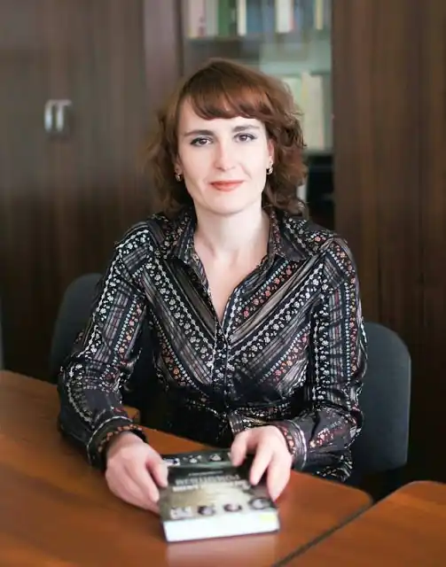
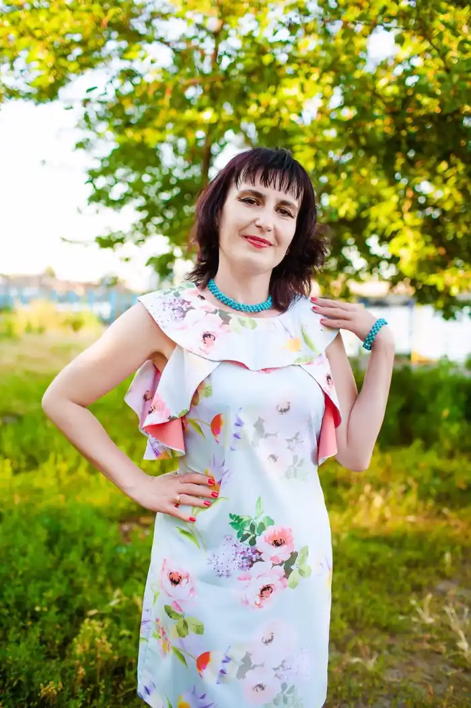
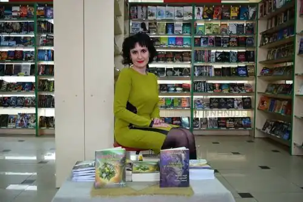

Ганна Синьоок (Клименко) – поетка, перекладачка, літературознавиця, критикиня. Кандидатка філологічних наук, доцентка кафедри української літератури та компаративістики Черкаського національного університету імені Богдана Хмельницького, заступниця директора навчально-наукового інституту української філології та соціальних комунікацій з виховної роботи.
Народилася в селі Свидівку Черкаського району Черкаської області. Середню освіту здобула в Першій міській гімназії м. Черкас. У 2002 році закінчила Черкаський державний університет імені Богдана Хмельницького за спеціальністю "Українська мова та література". 2009-го захистила кандидатську дисертацію на тему "Леонід Первомайський і Арсеній Тарковський: співмірність творчих особистостей і художньої спадщини". Авторка понад 140 публікацій, монографії "Леонід Первомайський – Арсеній Тарковський: діалог доль і творчості" (2008), поетичних збірок "Дитя липневих сутінків" (2014), "Таємно-лелече" (2014), "Відчувати на дотик грозу" (2015), "Яблуневе сонце" (2017), "О-р-і-ґ-а-м-і" (2019), книги поетичних перекладів Анни Ахматової "Стисла руки під темним серпанком…" (2017). У набутку має низку перекладів віршів Марини Цвєтаєвої, Олександра Вертинського та ін. Готуються до виходу поетична збірка "Меседжі кави й каменю", цикл віршів для дітей "Осінні мандри Листочка".
Ганна Синьоок має веб-сторінку "Поетична вітальня Ганни Синьоок", де розміщує зосібна власні твори й поетичні переклади, відео з авторськими читаннями https://www.facebook.com/Poetry.Ganna.Syniook/ А також має свій YouTube канал https://www.youtube.com/channel/UC2aBN9Y-oRUXNqfaDcSvmJg?view_as=subscriber З 2014 року очолює літературну студію "Поетична вітальня Ганни Клименко-Синьоок", що діє в Черкаському національному університеті. Членкиня НСПУ з 2019 р. Email: Anna.Syniook@gmail.com